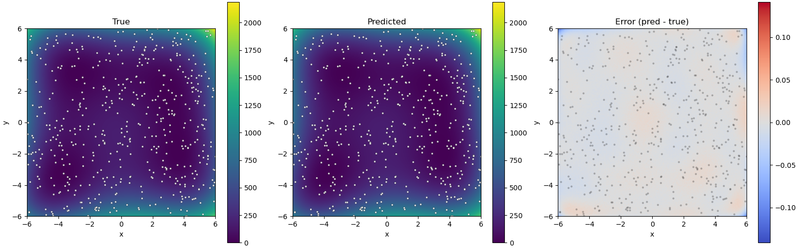

Example: Gaussian process regression for function modeling¶
Introduction¶
This tutorial demonstrates how to use the ODAT-SE framework to model an unknown function using Gaussian process (GP) regression. In the experimental setting, we only have access to data points obtained for a limited number of parameter combinations. The goals of this tutorial are to model a function given a subset of points corresponding to experimental results obtained at different experimental conditions, and to estimate a minimum value of the true function using its reconstruction.
Problem Setup¶
We consider experimental measurement data \(D \equiv \{(x_i,y_i,t_i)\}_i\), where:
\(i\) indexes each of the \(n\) data points for a given dataset (such that \(i\) runs from 1 to \(n\)),
\((x_i,y_i,t_i)\) represents the \(i\) -th measurement where \(x_i\) and \(y_i\) are state parameters that result in a (noisy) measurement \(t_i\).
The objectives in this tutorial are to:
determine the hyperparameters in the Gaussian process model that produce the best fit with the data, and
estimate the minimum of the true function using the surrogate obtained from the regression model on the dataset.
ODAT-SE will be used to estimate the minimum by implementing a custom solver that inherits from SolverBase. This solver evaluates predictions given inputs via a fitted GP model. The imports needed for this tutorial are:
import sys, os, argparse
import numpy as np
import odatse
from sklearn.preprocessing import StandardScaler
from sklearn.gaussian_process import GaussianProcessRegressor
from sklearn.gaussian_process.kernels import RBF, ConstantKernel, WhiteKernel
import matplotlib.pyplot as plt
from matplotlib.colors import CenteredNorm
Generating a Sample Dataset¶
As a test function, we consider the Himmelblau function with equation:
Its implementation in Python code is:
def himmelblau(x, y):
return (x**2 + y - 11.0) ** 2 + (x + y**2 - 7.0) ** 2
Sample data points are generated uniform randomly in the search space and are combined with a small amount of noise. The resulting dataset is then split into a training set and a test set.
def make_data(f, N, xrange, yrange, noise = 0.01):
x = np.random.uniform(*xrange, N)
y = np.random.uniform(*yrange, N)
t = (f(x, y) + noise * np.random.randn(N)).astype(np.float32).reshape(-1, 1)
X = np.stack([x, y], axis=1).astype(np.float32)
return X, t
def split_data(X, t, n_train, n_test):
ids = np.random.choice(len(t), len(t), replace=False)
id_tr = ids[:n_train]
id_te = ids[n_train:n_train + n_test]
return X[id_tr], t[id_tr], X[id_te], t[id_te]
Gaussian Process Regression¶
In this example, we perform Gaussian process regression using the following kernel:
where \(\lVert\cdot\rVert\) is the Euclidean distance between vectors \(x_i\) and \(x_j\). The quantities \(\theta_0, \theta_1, \theta_2\) are hyperparameters that are optimized in the fitting process.
The GP is initialized with the following function, which accepts training data through the arguments Xtr (inputs) and ttr (targets).
def gplearn(Xtr, ttr, seed):
kernel = ConstantKernel(1.0, (0.1, 1e6)) * RBF(1.0, (0.1, 10.0)) + WhiteKernel(noise_level=0.01, noise_level_bounds=(1e-16, 1))
gpr = GaussianProcessRegressor(kernel=kernel, n_restarts_optimizer=20, normalize_y=False, random_state=seed)
gpr.fit(Xtr, ttr)
print(f"Hyperparameters: {np.exp(gpr.kernel_.theta)}")
print(f"Fitted kernel: {gpr.kernel_}")
def predictor(X):
X = np.asarray(X, dtype=np.float32)
if X.ndim == 1:
X = X.reshape(1, -1)
ts = gpr.predict(X).astype(np.float32)
return ts # (N,)
return predictor
The fitting is done in the function (through the fit() invocation provided by sklearn.gaussian_process.GaussianProcessRegressor). This subroutine returns a function corresponding to a predictor that accepts input variables and outputs a predicted quantity.
Normalizing the Data¶
Before we pass the data to the GP fitting function, the data is first appropriately normalized. This is done with the following class:
class Converter:
def __init__(self, X, t):
self.scaler_X = StandardScaler()
self.scaler_t = StandardScaler()
self.scaler_X.fit(X)
self.scaler_t.fit(t)
def convert_X(self, X):
X = np.asarray(X, dtype=np.float32)
if X.ndim == 1:
X = X.reshape(1, -1)
return self.scaler_X.transform(X).astype(np.float32)
def convert_t(self, t):
return self.scaler_t.transform(t).astype(np.float32)
def revert_t(self, t_scaled):
if t_scaled.ndim == 1:
t_scaled = t_scaled.reshape(-1, 1)
t_proc = self.scaler_t.inverse_transform(t_scaled)
return t_proc.reshape(-1).astype(np.float32)
def gen_predictor(self, predictor_raw):
def predictor(X):
Xs = self.convert_X(X)
ts = predictor_raw(Xs)
return self.revert_t(ts)
return predictor
During initialization of a Converter instance, the scalers are calibrated to the data. We pass the predictor function defined in the earlier section to gen_predictor(). We then obtain a function that first normalizes the data before computing a best-fit model.
ODAT-SE Implementation¶
Code Implementation¶
For this tutorial, files can be located in sample/gpr relative to the root of the repository. The main script is named gpr.py.
Extending the SolverBase Class¶
We define a custom solver using ODAT-SE’s SolverBase class. Here, we define a solver for generic predictor functions.
class PredictorSolver(odatse.solver.SolverBase):
def __init__(self, info, predictor):
super().__init__(info)
self._name = "predict"
self.predictor = predictor
def evaluate(self, x, arg=(), nprocs=1, nthreads=1):
return self.predictor(x)[0]
In the evaluate function, we call the predictor function (which, for this example, is the output of Converter.gen_predictor).
Main Function¶
We define an auxiliary plotting function for visualizing the quality of the surrogate model relative to the true model.
def plot_res(Xtr, predictor):
# Grid over the domain
x = np.linspace(xrange[0], xrange[1], 251)
y = np.linspace(yrange[0], yrange[1], 251)
Xg, Yg = np.meshgrid(x, y)
XY = np.stack((Xg, Yg), axis=-1).reshape(-1, 2).astype(np.float32)
# Compute maps
Z_pred = predictor(XY).reshape(Xg.shape)
Z_true = himmelblau(Xg, Yg).astype(np.float32)
Z_err = Z_pred - Z_true
# Shared limits for true/pred
vmin = float(min(Z_true.min(), Z_pred.min()))
vmax = float(max(Z_true.max(), Z_pred.max()))
# Plots: True | Pred | Error
fig, axes = plt.subplots(1, 3, figsize=(16, 5), constrained_layout=True)
ax_t, ax_p, ax_e = axes
im_t = ax_t.imshow(Z_true, extent=[x.min(), x.max(), y.min(), y.max()], origin='lower', cmap='viridis', vmin=vmin, vmax=vmax)
ax_t.set_title('True')
ax_t.set_xlabel('x')
ax_t.set_ylabel('y')
ax_t.scatter(Xtr[:, 0], Xtr[:, 1], s=8, c='w', edgecolor='k', linewidths=0.3, alpha=0.8)
plt.colorbar(im_t, ax=ax_t)
im_p = ax_p.imshow(Z_pred, extent=[x.min(), x.max(), y.min(), y.max()], origin='lower', cmap='viridis', vmin=vmin, vmax=vmax)
ax_p.set_title('Predicted')
ax_p.set_xlabel('x')
ax_p.set_ylabel('y')
ax_p.scatter(Xtr[:, 0], Xtr[:, 1], s=8, c='w', edgecolor='k', linewidths=0.3, alpha=0.8)
plt.colorbar(im_p, ax=ax_p)
im_e = ax_e.imshow(Z_err, extent=[x.min(), x.max(), y.min(), y.max()], origin='lower', cmap='coolwarm', norm=CenteredNorm(vcenter=0.0))
ax_e.set_title('Error (pred - true)')
ax_e.set_xlabel('x')
ax_e.set_ylabel('y')
ax_e.scatter(Xtr[:, 0], Xtr[:, 1], s=8, c='k', alpha=0.25, linewidths=0)
plt.colorbar(im_e, ax=ax_e)
# plt.show()
fig.savefig("res.png")
The main function in the sample script accepts a TOML file as input and optionally a log file and arguments for changing the size of the training and test datasets.
if __name__ == "__main__":
parser = argparse.ArgumentParser()
parser.add_argument("--input", type=str, default="input.toml",
help="ODAT-SE input configuration file path")
parser.add_argument("--logfile", type=str, default=None,
help="ODAT-SE run log file (default: odatse_run.log)")
parser.add_argument("--ntrain", type=int, default=500,
help="number of training data points (default: 500)")
parser.add_argument("--ntest", type=int, default=500,
help="number of test data points (default: 500)")
args = parser.parse_args()
# Initialize ODAT-SE to get output directory
sys.argv = ["script.py", args.input, "--init"]
info, run_mode = odatse.initialize()
output_dir = info.base.get("output_dir", "./output")
# Create output directory if it doesn't exist
os.makedirs(output_dir, exist_ok=True)
# Set log file path
if args.logfile is None:
args.logfile = os.path.join(output_dir, "odatse_run.log")
np.random.seed(info.algorithm["seed"])
xrange, yrange = zip(info.algorithm["param"]["min_list"],info.algorithm["param"]["max_list"])
# Data
X, t = make_data(himmelblau, args.ntrain + args.ntest, xrange, yrange, 0.01)
# Split
Xtr, ttr, Xte, _ = split_data(X, t, args.ntrain, args.ntest)
conv = Converter(Xtr, ttr)
Xtr_s = conv.convert_X(Xtr)
ttr_s = conv.convert_t(ttr)
predictor_raw = gplearn(Xtr_s, ttr_s, info.algorithm["seed"])
predictor = conv.gen_predictor(predictor_raw)
t_pred = predictor(Xte)
t_true = himmelblau(Xte[:, 0], Xte[:, 1]).astype(np.float32)
mse = float(np.mean((t_pred - t_true) ** 2))
var_true = float(np.var(t_true))
nmse = mse / (var_true + 1e-12)
print(f"MSE (n_test={len(t_true)}): {mse:.6e}")
print(f"NMSE: {nmse:.6e}")
# Plot output
plot_res(Xtr, predictor)
original_stdout = sys.stdout
original_stderr = sys.stderr
# Run ODAT-SE
with open(args.logfile, "w") as f:
sys.stdout = f
sys.stderr = f
solver = PredictorSolver(info, predictor=predictor)
runner = odatse.Runner(solver, info)
alg_module = odatse.algorithm.choose_algorithm(info.algorithm["name"])
alg = alg_module.Algorithm(info, runner, run_mode=run_mode)
result = alg.main()
sys.stdout = original_stdout
sys.stderr = original_stderr
print(f"Best solution: x^* = {result['x']}")
print(f"Surrogate f(x^*) = {result['fx']}")
print(f"True f(x^*) = {himmelblau(*tuple(result['x']))}")
In addition to plots showing a comparison between the fitted model and the true model, the above code prints out the fitted hyperparameters for the GP model, the resulting kernel, the mean squared error (MSE), and the normalized MSE for the fitted model. ODAT-SE is used to estimate the minimum of the surrogate model, and we output an estimate of the location of the minimum in the search space according to the surrogate model, the value of the surrogate at the estimated minimum, and the value of the true function at the estimated minimum.
Note that in the implementation, we are free to replace the predictor function (in this case, the output of gplearn) with another predictor function implementing a different model (such as a neural network).
Creating the ODAT-SE Input File¶
The input file input.toml for this example is:
[base]
dimension = 2
output_dir = "./output"
[solver]
[algorithm]
name = "minsearch"
seed = 12345
[algorithm.param]
min_list = [-6.0, -6.0]
max_list = [6.0, 6.0]
initial_list = [0.0, 0.0]
We use the minsearch algorithm (Nelder-Mead optimization) to find the minimum of the function. The search space spans the interval \([-6,6]\) along both the \(x\) and \(y\) arguments.
Running the Analysis¶
Execute the script, passing input.toml as the input argument:
python gpr.py --input input.toml
We obtain the following results:

Fig. 12 Figure 1: Plots of the true model (left), surrogate model (center), and their difference (right). Dots correspond to training data points.¶
This shows that the surrogate model closely mimics the true model. We also obtain the following information about the estimated minimum of the surrogate GP model:
Best solution: \(x^* = (2.99690478,1.99537007)\)
Surrogate \(f(x^*) = -0.0022618891671299934\)
True \(f(x^*) = 0.001004130687907469\)
The obtained minimum is very close to the minimum at \((3.0,2.0)\), one of the four global minima of the Himmelblau function whose value is \(0\).